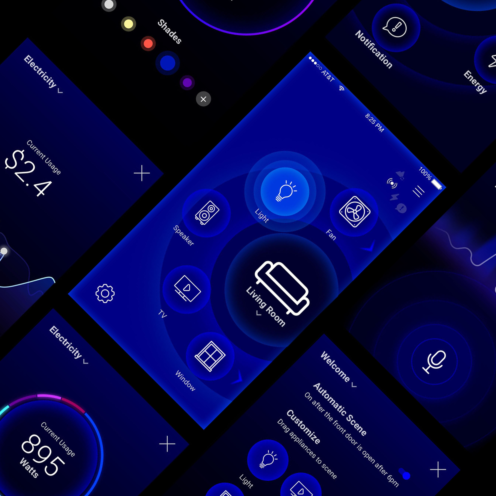
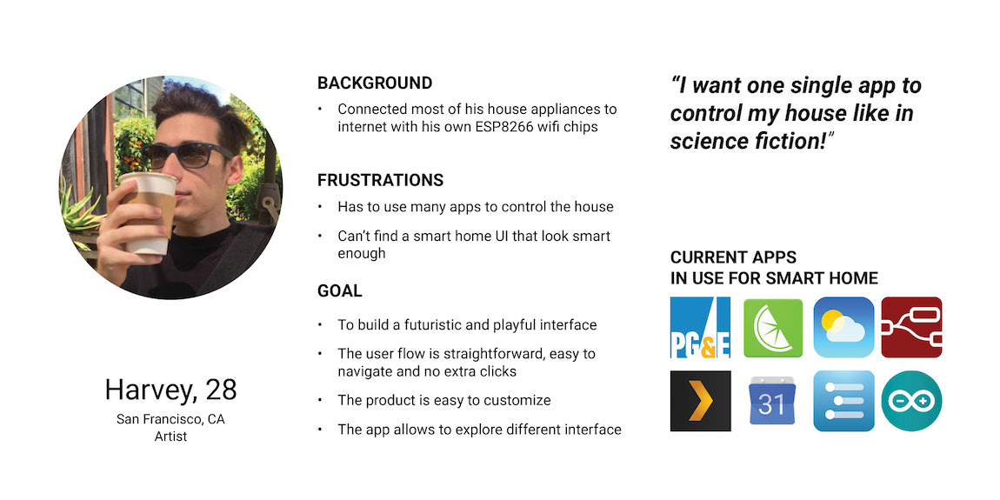
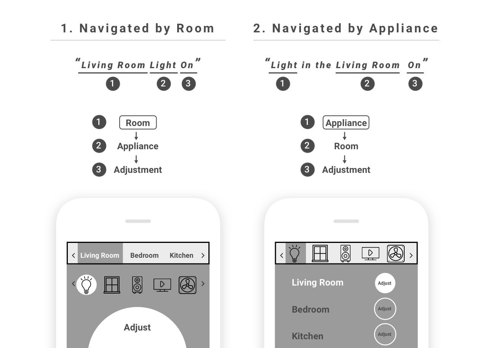
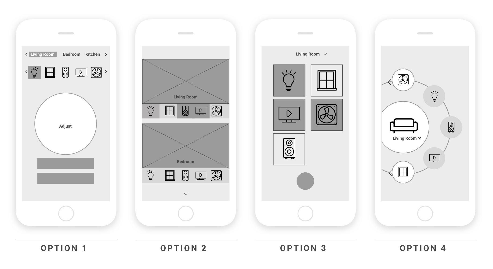
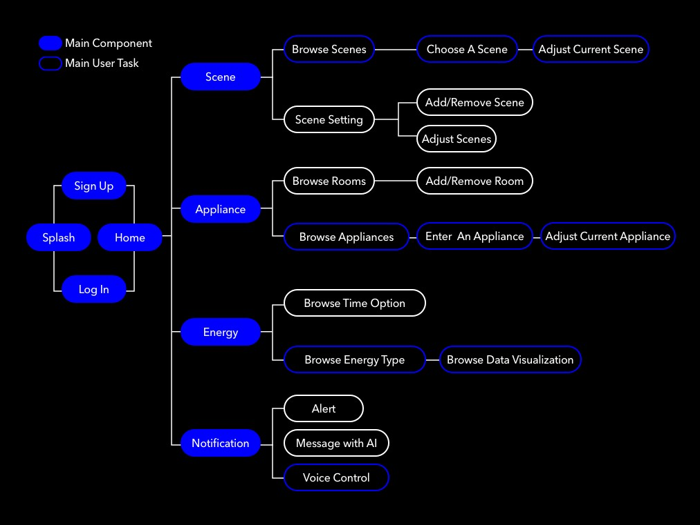

Overview
Persona

UX Flow Testing
I started the UI development by sketching the mostly used page - appliances page. I developed 4 options following the behavior model 'Room-Appliance-Adjust'.
I chose the first user flow.
UI Development
I started the UI development by sketching the mostly used page - appliances page. I developed 4 options following the UX model 'Room-Appliance-Adjust'.
I hosted a quick user review meeting afterwards, and learnt that the circular layout was the most compelling visually and users quickly understood the interactions needed. After reviewing the persona I developed and discussiing with users, I decided to choose the Option 4 - Circle UI as the main UI language.
Site Map
Wireframe